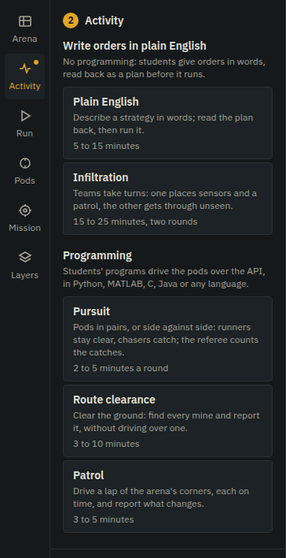
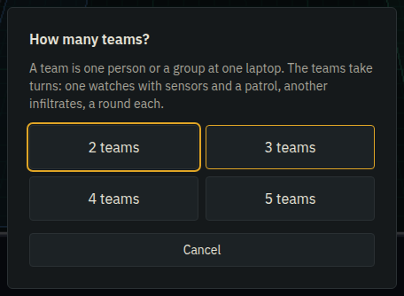

Infiltration in plain English
Room UBACYD. An example of where it fits: ZEIT8205 Fundamentals of Surveillance Technologies, at UNSW Canberra.
One team hides sensors and patrols; the other tries to get its pods to the objective unseen. Two rounds of up to 120 s, roles swapped; 15 to 25 minutes in all. Orders are typed in plain English and turned into a plan.
It is played live, with a teacher at the console: the activity is already chosen in the surveillance demo room, where the presenter runs the console. In your own room, steps 1 and 2 choose it. The steps and pictures below are a two-team match from start to report. For a class that uses ATAK, the same match shows on ATAK devices: see ATAK.
Teacher (big screen)
- Click Activity on the left rail, choose Infiltration. A box asks how many teams: choose 2 teams.
- Click Run, then Put pods out if the pods are not out yet (on an arena already drawn, choosing the teams puts them out). The amber button is always the next step. Four pods: A-patrol for the watchers, B1 to B3 for the infiltrators (in round 2, B-patrol and A1 to A3).



- Open arena.platopod.com/join (or scan the QR code on the big screen), type the room code, click Find it, then Team A or Team B. The team's console opens.
- The watching team clicks Place sensors, clicks up to three spots on the ground, then Place sensors again to finish. The other team cannot see them.
- Both teams type their orders and click Read my orders. Check the read-back says what was meant. Example orders:
- Watchers: "A-patrol patrols between sensor 1 and sensor 3 until stopped. If a pod is spotted, intercept it."
- Infiltrators: "B1 goes along the bottom edge to the objective. B2 goes to the objective. B3 goes along the top edge to the objective."


- Click Start Infiltration once both teams' orders show in the middle panel. If a team has sent none, the console asks before it starts. The round ends by itself at 120 s, or sooner once every pod is through or caught; the clock then stops on the time that was left.
- Click Next round: roles swap and the pods go back out. Repeat steps 4 to 6.
- After round 2 every screen shows the result. Report opens the match write-up (orders, rounds, scores) to print or save.
- New match to play again, or Reset all to clear.